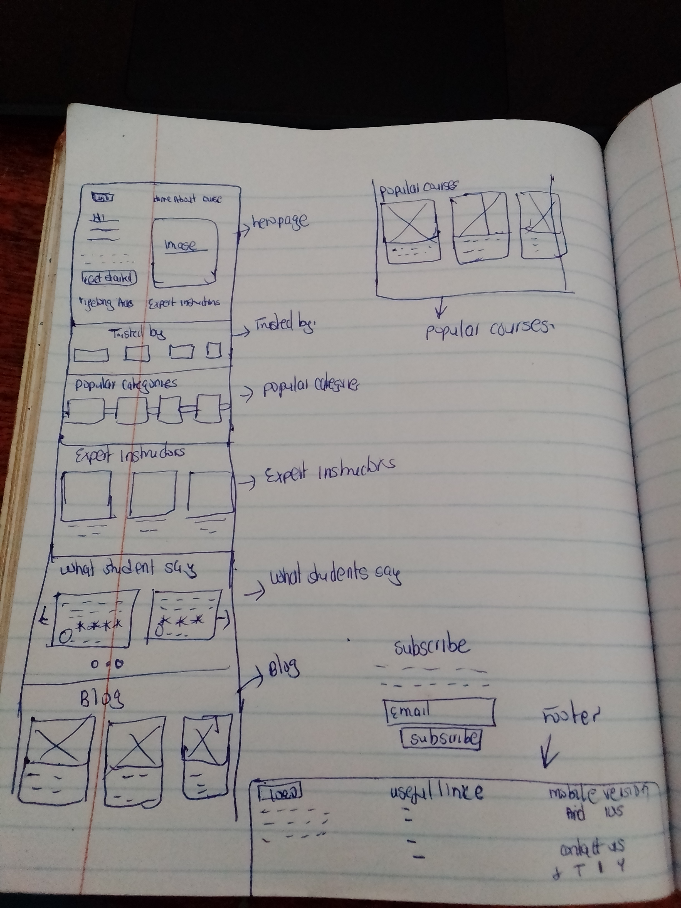
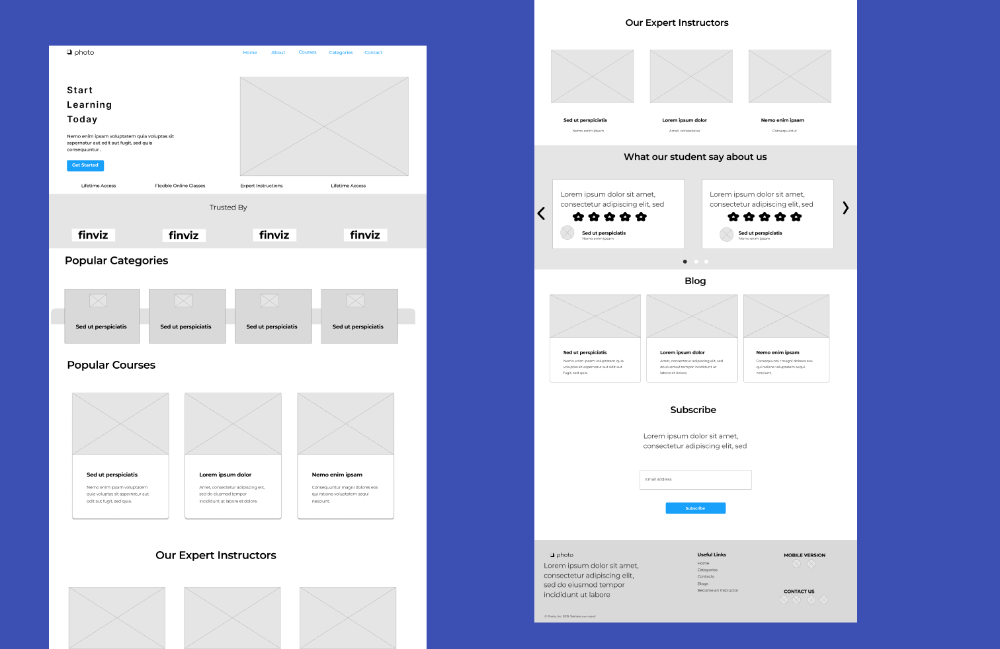

Timeline
1st march-15 april

Online Learning
Platform
IOS/Android App/Desktop
IOS/Android App/Desktop
My Role
UI Researcher/UI Designer
UI Researcher/UI Designer
Project Overview:
Online Learning is a user interface landing page for an e-learning platform. The purpose of the platform is to provide high-quality tutoring services to students who are looking to improve their grades, learn new skills, or prepare for exams. My friend who is passionate about tutoring approached me and wants to make learning accessible to everyone, regardless of their background. This is what inspired me to design the landing page of the plaform from brainstorming to the final design.
Problem Statement:
The e-learning platform industry is becoming increasingly crowded, making it difficult for new platforms to stand out and attract potential students. As such, the challenge was to design a landing page that would differentiate the platform from competitors, and effectively communicate its benefits to potential students in a clear and compelling way. The landing page needed to be visually appealing, easy to navigate, and incorporate social proof to establish trust and credibility with potential users. Furthermore, the landing page needed to be responsive to different devices and ensure a seamless user experience for students, ultimately leading to an increase in sign-ups and revenue for the platform.
Background
Hypothesis
The use of well-designed landing pages has been shown to be an effective strategy for attracting potential users and increasing conversions for online platforms. By incorporating best practices in user experience (UX) design, such as clear calls-to-action and social proof, it is possible to establish trust and credibility with potential users, ultimately leading to an increase in sign-ups and revenue for the platform. As such, by creating a user-friendly and visually appealing landing page for the e-learning platform, we hypothesize that we can effectively differentiate the platform from competitors, increase user engagement and sign-ups, and contribute to the promotion of education as a key tool for personal and professional growth.
Business Goals
The main goals of the project were to design a user-friendly landing page that would attract potential students and encourage them to sign up for tutoring services. The landing page needed to be visually appealing, easy to navigate, and provide clear information about the benefits of using the platform. Other goals included creating a responsive design that would look great on desktop, tablet, and mobile devices, incorporating social proof, such as testimonials from satisfied students and parents, and including a call-to-action (CTA) button that would prompt users to sign up for tutoring services.
Process
Sketches
I did some rapid, sketches to have a more clear vision about future interface. Sketching was followed by making wireframes.
Wireframes
This high-fidelity wireframes were created to catch all necessary component and layout requirements with general structure of the interaction.
Final Designs
Here's a detailed walkthrough of the Channing app.